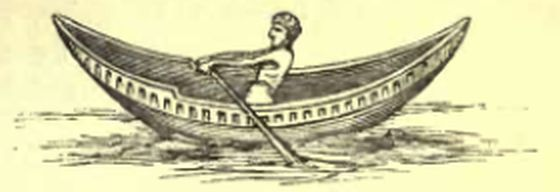

Мы кратко рассмотрели в прошлый раз историю появления лемба и его эволюцию в античные времена. С падением римской цивилизации исчезли многие присущие ей атрибуты. Канул в небытие и лемб. Но ненадолго. Авторитетнейших энциклопедист раннего Средневековья Исидор Севильский (ок.560-636 гг.) удостоил лемб высокой чести, включив его в свои «Этимологии»:
Lembus navicula brevis, qui alia appellatione dicitur et cumba et caupulus, sicut et lintris, id est carabus, quem in Pado paludibusque utuntur.
Лемб – небольшой корабль, который также называют и кимба, и каупул, а временами и линтер, т.е. это судно, которое используют на заболоченных участках реки По.
Isidorus Hispalensis, Etymologiarum libri XX. Liber XIX, Caput I. DE NAVIBUS, 25.
Таким образом мы видим, что Исидор употребляет этот термин как родовое понятие для малых кораблей.
Однако ничто не указывает, что этот термин существовал тогда в живом разговорном языке. Только в середине XIV века мы вновь встречаем его в европейских документах, прежде всего в контрактах на покупку, продажу и фрахтовку судов, зафиксированных в нотариальных актах той эпохи. Сначала он появляется в Италии и Провансе, затем проникает и на Иберийский полуостров. Нет никаких указаний, свидетельствующих о том, что в этих случаях мы имеем дело с таким же лембом, о котором мы знаем из античной истории. Вместе с тем, мы получаем множество документальных свидетельств об основных конструкционных особенностя лемба на новом этапе его эволюции. В одном из самых первых (датирован 1361 годом) документов такого рода, находящихся в архиве Перпиньяна (Восточные Пиренеи) и вынесенных на суд морских историков Огюстеном Жалем в его «Морском словаре», упоминается lembo, который зафрахтован, чтобы перевезти «пятьдесят быков под палубой и девяносто овец на палубе». Это было почти наверняка чисто парусное судно, так как на его палубе помимо 90 овец было всего семь членов экипажа. В записи 1391 года упоминается другой lembo, тоже внушительных размеров, оснащенный двумя мачтами с латинскими парусами, которые в случае плохой погоды можно было заменить на прямые (о том, почему и как меняли латинские паруса на прямые мы писали раньше). Но встречаются и документы, в которых лемб – гребное судно. Так, в записи 1398 года идет речь о lembo с тринадцатью банками для гребцов.
Лембы в средневековом военном флоте впервые упоминаются в 1380 г.в хронике войны Кьоджи между Генуей и Венецией. Правда, информация о них очень скудная, говорится лишь о мортирах, установленных на лембах. Скорее всего, это были привлеченные для войны речные суда, а не военные корабли специальной постройки. Существенную долю в корабельных составах флотов региона лембы начинают составлять в XVI-XVII вв. Так, в составленный Л.Гатти список кораблей Генуи, выставленных на продажу за период с 1503 по 1645 г., входят 116 лембов из общего состава в 1328 кораблей. Правда, в этой статистике есть одна тонкость. Дело в том, что практически все нотариальные документы купли-продажи судов того времени составлялись на латинском языке. А латинский термин lembos был по своему значению значительно шире лигурийского lembo.
Так может быть лемб, lembos – это всего лишь термин, за которым не стояло никакого конкретного типа или класса кораблей? Если снова вернуться к контрактам на покупку и продажу кораблей, зафиксированных лигурийскими нотариальными актами, то мы встретим там такие записи:
“lembus sive barcha ad latinam» - лемб или барка с латинскими парусами;
«lembus seu brigantinus” – лемб или бригантина,
“…sive barcha» - лемб или барка,
“…sive gondola», - или гондола,
«…sive leudus ...» – или леуд,
«lembum sive cimbam» ,"cimba" – лемб или кимба,
и, наконец, даже «lembum sive tartanam» - лемб или тартана (1622 г.)
А что стóят такие записи как "lembus seu fregatina" (1584 г.) или "lembus seu ut vulgo dicitur fregatina" (1609 г.), ставящие знак равенства между лембом (на латыни) и гребным фрегатом (на разговорном итальянском)?
С.Беллабара и Э.Гверини в своей богато иллюстрированной книге «Vele italiane della costa occidentale (2002)» выдвигают гипотезу, с которой нельзя не согласиться на нынешнем уровне наших знаний о средневеком флоте Средиземноморья: lembus это всего лишь латинский термин для всех малых кораблей того периода, за которым не стояло никакого конкретного корабля. Поэтому по настоянию владельцев судов в документы вносили название конкретного типа корабля, взятое из обиходной итальянской речи. Вот и появились в нотариальных актах те записи, отрывки из которых мы процитировали выше.
В XVII веке лемб в документах упоминается уже крайне редко, а начиная с 1700 года остается лишь в нескольких контрактах на латинском языке, фиксирующих куплю-продажу таких малых грузовых судов, как тартана, леудо, бригантина и им подобные, которые всегда называются после разделительных союзов sive, vel, seu. Пантеро Пантера в своем известном трактате утверждает, что лемб это судно классической античности класса актуарии (“fu una specie di nave actuaria ...»), хотя отмечает его наличие в составе современных флотов. Другие известные источники той эпохи, такие как Furttenbach и Coronelli хранят по поводу лембов молчание.
Точно такая же картина складываетя с другим судном, которое мы упомянули в заголовке прошлого поста. Cimba, или в латинских текстах cymba, cumba – кимба, небольшое гребное судно, название которого встречается во многих античных источниках.

Кимба. Гравюра из книги Rich, Illustrated Companion to the Latin Dictionary, and Greek Lexicon (1849)
Вот как упоминает кимбу Овидий:
Occupat hic collem, cumba sedet alter adunca
et ducit remos illic, ubi nuper ararat,
Суша и море слились, и различья меж ними не стало.
Все было — море одно, и не было брега у моря.
Кто перебрался на холм, кто в лодке сидит крутобокой
И загребает веслом, где сам обрабатывал пашню.
Овидий, Метаморфозы, 1,293. Перевод с латинского С. В. Шервинского. (Перевод, как обычно, шире отрывка из оригинального текста)
Использованный Овидием эпитет «adunca» можно перевести не только как «крутобокая», но и как «загнутая внутрь, изогнутая, крючковатая» (Дворецкий). В другом месте этот же автор использует, описывая кимбу, определение «concava» (вогнутый, согнутый горстью, впалый, полый – Дворецкий). Из других источников мы узнаем, что гребет на кимбе, как правило, один человек, лишь в некоторых случаях двое, поэтому именно кимба стала тем мифологическим челноком, на котором Харон перевозит души умерших через реку забвения.
omnes eodem cogimur, omnium
versatur urna serius ocius
sors exitura et nos in aeternum
exilium impositura cumbae.
Мы все гонимы в царство подземное.
Вертится урна: рано ли, поздно ли -
Наш жребий выпадет, и вот он -
В вечность изгнанья челнок пред нами.
Гораций, Оды, II, 3, 28, Пер. А. П. Семенова-Тян-Шанского
Первоначально кимбой называли лодки-однодревки, выдолбленные из цельного ствола дерева. Изобретение такого челнока обычно приписывали финикийцам, но это просто очередной миф. Вряд ли кто-нибудь узнает, когда и у кого впервые появились такие суда. Впоследствии их корпуса стали делать наборными и служили эти суденышки в качестве вспомогательных плавредств для более крупных кораблей и портовых служб.
И наконец, нам остается рассмотреть последний из генуэзских кораблей, анонсированных в заголовке прошлого поста: leudo.
Название это сродни тем судам в морской истории, которые названы благодаря сходству формы их корпуса с популярными музыкальными инструментами. Вспомним, хотя бы, флейт. Так и тут: leudo в переводе с итальянского это лютня – leudo, liuto.
Конструкция современных лигурийских леудо подробно описана в литературе, см. например перевод с итальянского интересной статьи Пьетро Берти: https://www.shipmodeling.ru/books/leudo
Историю же этого интересного судна мы рассмотрим в следующий раз.